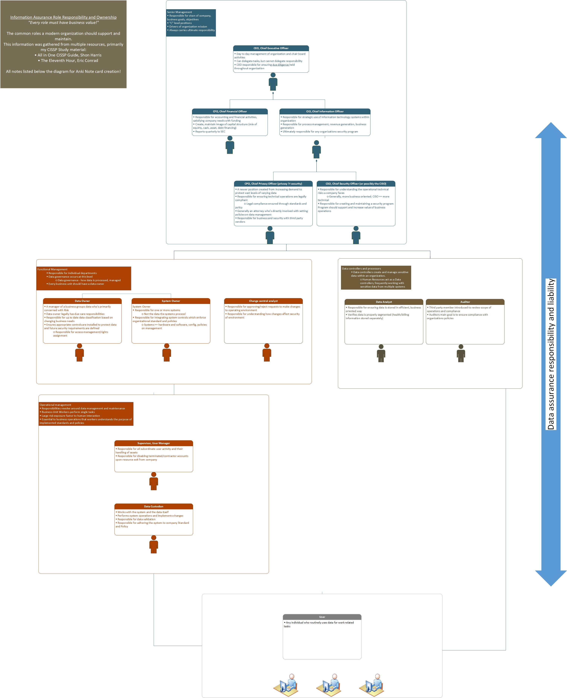

"What do you say? Wanna go around again?" - Futurama
Find the full resolution pdf here, or feel free to read the notes below. 
Here are my notes from my role studies!
"Every role has a business value!"
#CEO, Chief Executive Officer
|_• Day to day management of organization
|_• Chair board leader
|_• Can delegate tasks, but cannot delegate responsibility
|__○ CEO responsible for ensuring due diligence held throughout organization
#
#Senior Management
|_• Responsible for vison of company, business goals, objectives
|_• "C" level positions
|_• Always carries ultimate responsibility
#CFO, Chief Financial Officer
|_• Responsible for accounting and financial activities, satisfying company needs with funding
|_• Create, maintain image of capital structure (mix of equity, cash, asset, debt financing)
|_• Reports quarterly to SEC
#CIO, Chief Information Officer
|_• Responsible for strategic use of information technology systems within organization
|_• Responsible for process management, revenue generation, business generation
|_• Ultimately responsible for any organizations security program
#CPO, Chief Privacy Officer (privacy != security)
|_• A newer position created from increasing demand to protect vast levels of varying data
|_• Responsible for ensuring technical operations are legally compliant
|__○ Legal compliance ensured through standards and policy
|_• Generally an attorney who’s directly involved with setting policies on data management
|_• Responsible for business and security with third party vendors
#CSO, Chief Security Officer (or possibly the CISO)
|_• Responsible for understanding the operational technical risks a company faces
|__○ Generally, more business oriented. CISO == more technical
|_• Responsible for creating and maintaining a security program
|__○ Program should support and increase value of business operations
#Data Owner
|_• A manager of a business groups data who's primarily concerned with Risk
|_• Data owner legally has due care responsibilities
|_• Responsible for up to date data classification based on changing business needs
|_• Ensures appropriate controls are installed to protect data and future security requirements are defined
|_• Responsible for access management/rights assignment
#System Owner
|_• Responsible for one or more systems
|__○ Not the data the systems process!
|_• Responsible for integrating system controls which enforce organizational standard and policies
|__○ Systems == hardware and software, config, policies on management
#Functional Management
|_• Responsible for individual departments
|_• Data governance occurs at this level
|__○ Data governance - how data is processed, managed
|_• Every business unit should have a data owner
#Change control analyst
|_• Responsible for approving/reject requests to make changes to operating environment
|_• Responsible for understanding how changes affect security of environment
#Data analyst
|_• Responsible for ensuring data is stored in efficient, business oriented way
|_• Verifies data is properly segmented (health/billing information stored separately)
#Auditor
|_• Third party member introduced to review scope of operations and compliance
|_• Auditors main goal is to ensure compliance with organizations policies
#Operational Management
|_• Managers oversee workers
|_• Workers perform single tasks for department
#Data Custodian
|_• Works with the system and the data itself
|_• Performs system operations and implements changes
|_• Responsible for data validation
|_• Responsible for adhering the system to company Standard and Policy
#Security administrator
|_• Responsible for implementing and managing security purposed devices (IPS, IDS) and software (HIDS/HIPS)
|__○ Network admins generally == security administrators
#Supervisor, User Manager
|_• Responsible for all subordinate user activity and their handling of assets
|_• Responsible for disabling terminated/contractor accounts upon resource exit from company
#User
|_• Any individual who routinely uses data for work related tasks